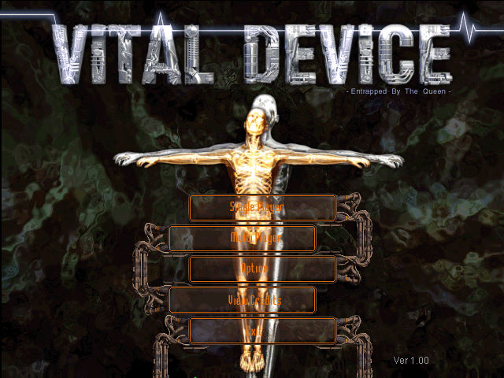
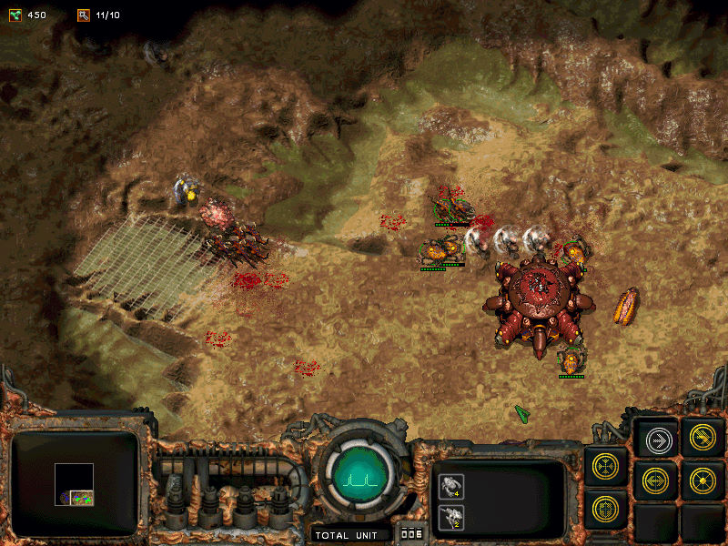

名稱：危星任務 (Vital Device: Entrapped by the Queen，中文版)
簡介：韓國NOG 2001年出品的即時戰略遊戲，由Aozora代理發行，台灣由昱光中文化，並由
智冠發行。遊戲玩法與星際爭霸類似 [待補]。


保護：光碟+序號（F5F9-11D2-C19D-73B4）
備註：非安裝移機者，必須設定下列Registry：
[HKEY_CURRENT_USER\Software\nog\vitaldevice]
"Directory"=".\\"
備註：VirtualBox需搭配DxWnd（不可全螢幕），或虛擬機改用VMware。